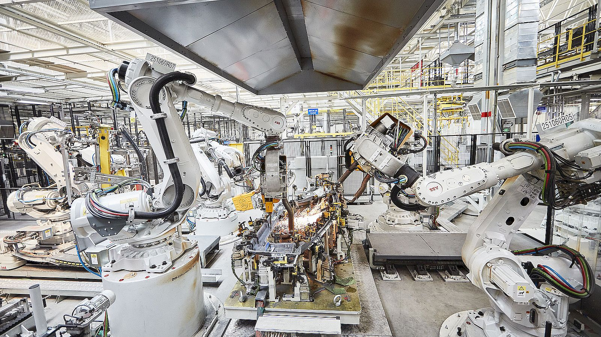

Industry

Industry robots are used in jobs in which it is either unsafe or faster to use a robot as they do not put lives in danger and can do repetitive tasks with ease and consistance.
Medical
Medical robots assist with surgery, streamline hospital logistics, and enable providers to give more direct attention to patients. Robots in the medical field are transforming how surgeries are performed, streamlining supply delivery and disinfection, and freeing up time for providers to engage with patients.
Exploratory
Exploratory robots are "taught" to do their tasks when a programmer programs a task into the robot. The program tells the robot what to do. The robots could also be remote controlled, and have a human control them and tell them what to do.